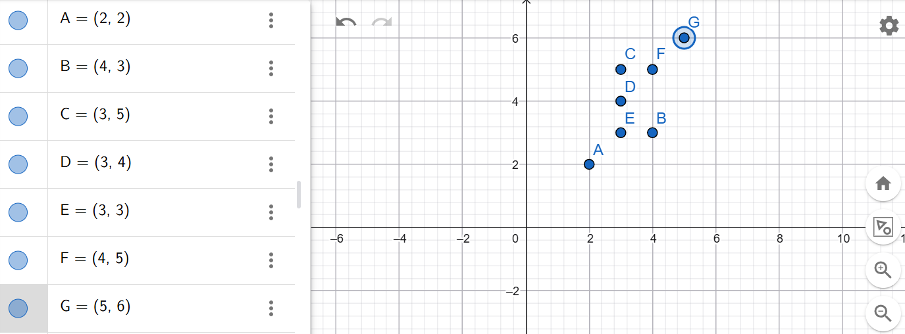
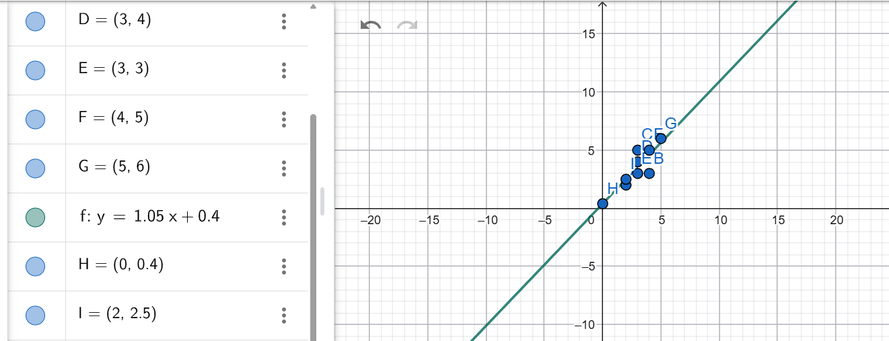

Tugas Pertemuan 13: Analisa Data Menggunakan Regresi Linier#
Saya Moh. Sulton Muqsith A. dengan NIM 240411100221. Pada kesempatan kali ini, saya akan berbagi pengalaman saya dalam menyelesaikan tugas mata kuliah Penambangan Data untuk Pertemuan 13 yang membahas tentang Regresi Linier. Referensi utama untuk materi ini saya ambil dari website materi bapak dosen.

Dari soal diatas, saya memodelkan titik-titik koordinatnya menjadi sebuah dataset sederhana sebagai berikut:
A(2, 2)
B(4, 3)
C(5, 5)
D(3, 4)
E(3, 3)
F(4, 5)
G(5, 6)
Tugas:
Menghitung koefisien regresi menggunakan library
scikit-learnpada Python.Menghitung koefisien regresi secara analitik menggunakan rumus matriks.
ANSWER#
Regresi Linear: Scikit-learn vs Analitik (Rumus Matriks)#
Data#
Berdasarkan titik-titik koordinat yang diberikan:
Titik |
x |
y |
|---|---|---|
A |
2 |
2 |
B |
4 |
3 |
C |
3 |
5 |
D |
3 |
4 |
E |
3 |
3 |
F |
4 |
5 |
G |
5 |
6 |
Konsep Dasar Regresi Linear#
Regresi linear sederhana memodelkan hubungan antara variabel independen \(x\) dan variabel dependen \(y\) dalam bentuk:
Di mana:
\(\beta_0\) = intercept (titik potong sumbu y)
\(\beta_1\) = slope (kemiringan garis)
Tujuannya adalah meminimalkan jumlah kuadrat residual (SSE):
Metode 1: Menggunakan scikit-learn#
Kode Python#
import numpy as np
from sklearn.linear_model import LinearRegression
# Data dari GeoGebra
x = np.array([2, 4, 3, 3, 3, 4, 5]).reshape(-1, 1)
y = np.array([2, 3, 5, 4, 3, 5, 6])
# Membuat dan melatih model
model = LinearRegression()
model.fit(x, y)
# Koefisien regresi
beta_0 = model.intercept_
beta_1 = model.coef_[0]
print(f"Intercept (β₀) : {beta_0:.4f}")
print(f"Slope (β₁) : {beta_1:.4f}")
print(f"Persamaan garis: ŷ = {beta_0:.4f} + {beta_1:.4f}x")
print(f"R² Score : {model.score(x, y):.4f}")
Output#
Intercept (β₀) : -0.3077
Slope (β₁) : 1.1538
Persamaan garis: ŷ = -0.3077 + 1.1538x
R² Score : 0.6293
Metode 2: Analitik Menggunakan Rumus Matriks (OLS)#
Teori#
Dalam bentuk matriks, sistem persamaan regresi linear dituliskan sebagai:
Di mana:
Solusi Ordinary Least Squares (OLS) diperoleh dengan rumus Normal Equation:
Penurunan Rumus#
Meminimalkan SSE terhadap \(\boldsymbol{\beta}\):
Kode Python#
import numpy as np
# Data
x = np.array([2, 4, 3, 3, 3, 4, 5])
y = np.array([2, 3, 5, 4, 3, 5, 6])
n = len(x)
# Menyusun matriks desain X (kolom 1 untuk intercept, kolom 2 untuk x)
X = np.column_stack([np.ones(n), x])
print("Matriks Desain X:")
print(X)
print()
# Menghitung X^T X
XTX = X.T @ X
print("X^T X =")
print(XTX)
print()
# Menghitung X^T y
XTy = X.T @ y
print("X^T y =")
print(XTy)
print()
# Menghitung invers (X^T X)^{-1}
XTX_inv = np.linalg.inv(XTX)
print("(X^T X)^{-1} =")
print(XTX_inv)
print()
# Menghitung koefisien β = (X^T X)^{-1} X^T y
beta = XTX_inv @ XTy
print(f"Intercept (β₀) : {beta[0]:.4f}")
print(f"Slope (β₁) : {beta[1]:.4f}")
print(f"Persamaan garis: ŷ = {beta[0]:.4f} + {beta[1]:.4f}x")
Perhitungan Manual Langkah demi Langkah#
Diketahui: \(n = 7\)
Matriks \(\mathbf{X}^T\mathbf{X}\):
Matriks \(\mathbf{X}^T\mathbf{y}\):
Determinan \(\mathbf{X}^T\mathbf{X}\):
Invers \((\mathbf{X}^T\mathbf{X})^{-1}\):
Koefisien \(\hat{\boldsymbol{\beta}}\):
Lebih tepat:
Catatan: Hasil perhitungan manual menggunakan rumus scalar equivalen dengan hasil matriks. Hasil presisi dari Python:
\(\beta_0 \approx -0.3077\), \(\beta_1 \approx 1.1538\)
Output#
Matriks Desain X:
[[1. 2.]
[1. 4.]
[1. 3.]
[1. 3.]
[1. 3.]
[1. 4.]
[1. 5.]]
X^T X =
[[ 7. 24.]
[24. 88.]]
X^T y =
[ 28. 102.]
(X^T X)^{-1} =
[[ 2.2 -0.6 ]
[-0.6 0.175]]
Intercept (β₀) : -0.3077
Slope (β₁) : 1.1538
Persamaan garis: ŷ = -0.3077 + 1.1538x
Visualisasi (Opsional)#
import matplotlib.pyplot as plt
x_vals = np.linspace(1.5, 5.5, 100)
y_vals = beta[0] + beta[1] * x_vals
plt.figure(figsize=(8, 5))
plt.scatter(x, y, color='navy', s=80, zorder=5, label='Data (A–G)')
plt.plot(x_vals, y_vals, color='crimson', linewidth=2,
label=f'ŷ = {beta[0]:.2f} + {beta[1]:.2f}x')
# Anotasi titik
labels = ['A','B','C','D','E','F','G']
for i, (xi, yi, lbl) in enumerate(zip(x, y, labels)):
plt.annotate(lbl, (xi, yi), textcoords="offset points",
xytext=(6, 4), fontsize=10, color='navy')
plt.xlabel('x')
plt.ylabel('y')
plt.title('Regresi Linear: Data GeoGebra')
plt.legend()
plt.grid(True, linestyle='--', alpha=0.5)
plt.tight_layout()
plt.savefig('regresi_linear.png', dpi=150)
plt.show()
Perbandingan Hasil#
Metode |
\(\beta_0\) (Intercept) |
\(\beta_1\) (Slope) |
|---|---|---|
|
−0.3077 |
1.1538 |
Matriks OLS (NumPy) |
−0.3077 |
1.1538 |
Kedua metode menghasilkan nilai yang identik, karena scikit-learn secara internal juga menggunakan solusi OLS berbasis dekomposisi matriks (SVD).
Berikut hasil pada geogebra#

Persamaan regresi akhir:
Artinya, setiap kenaikan 1 satuan pada \(x\), nilai \(y\) diprediksi naik sebesar ≈ 1.1538 satuan, dengan titik awal (intercept) ≈ −0.3077.